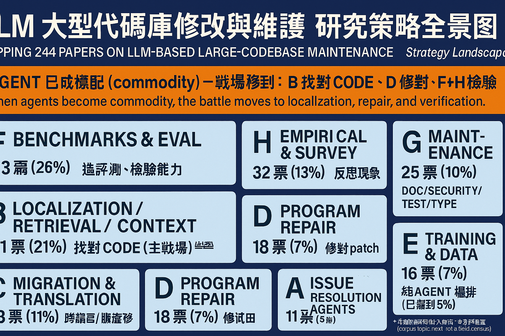
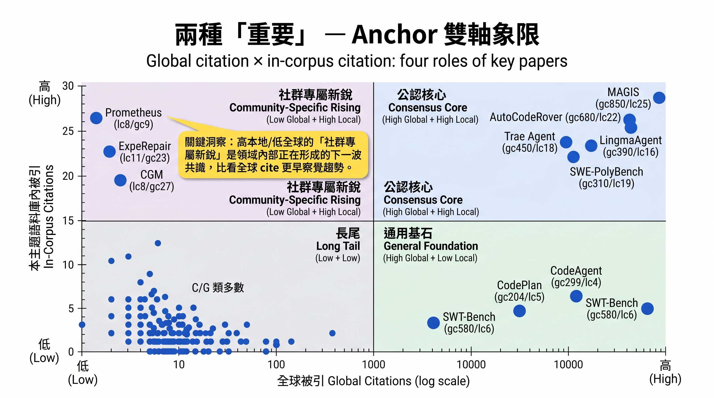
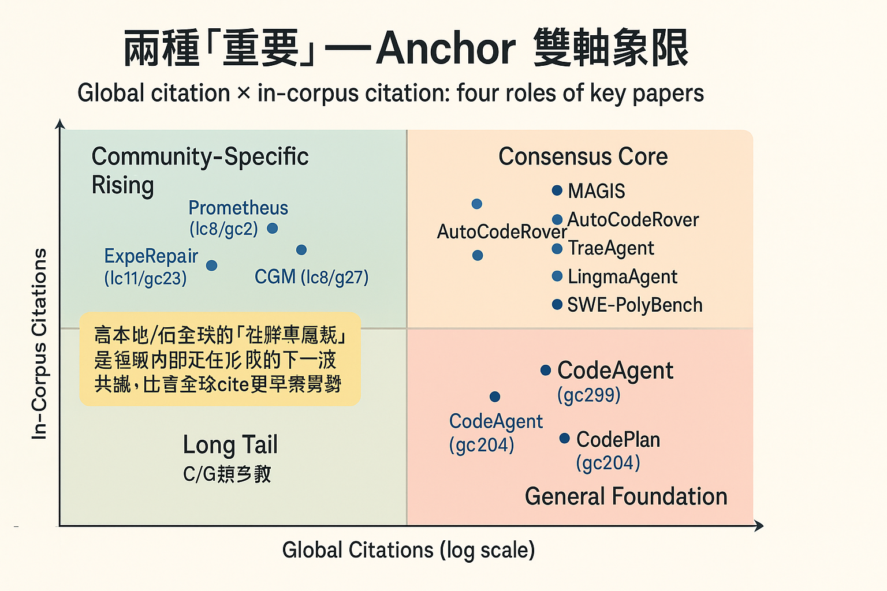
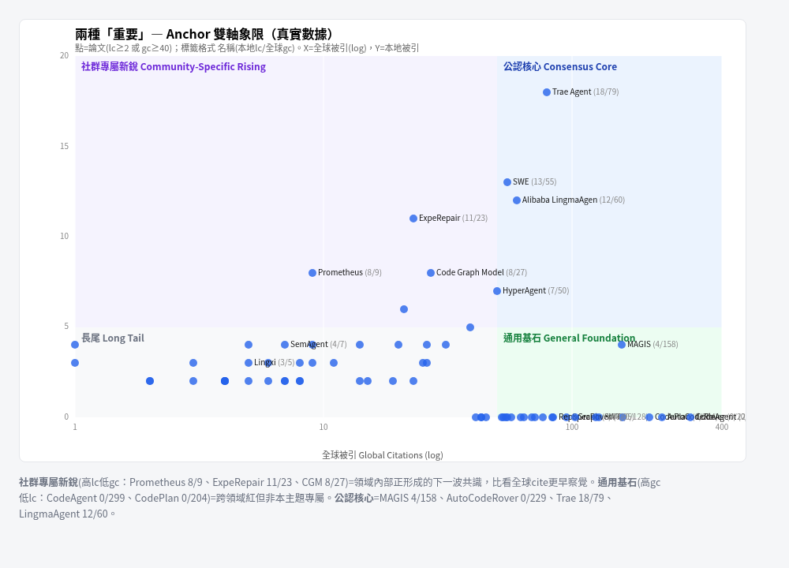
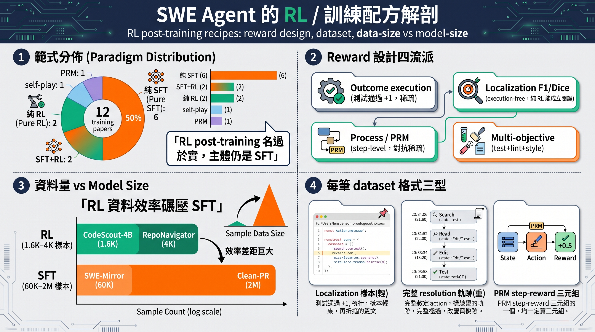
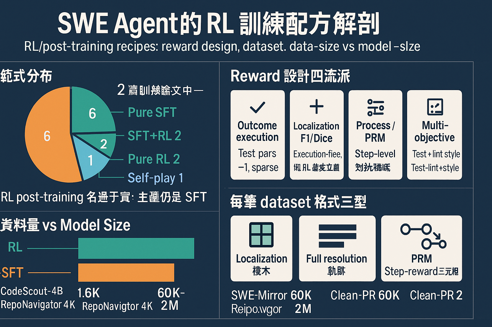
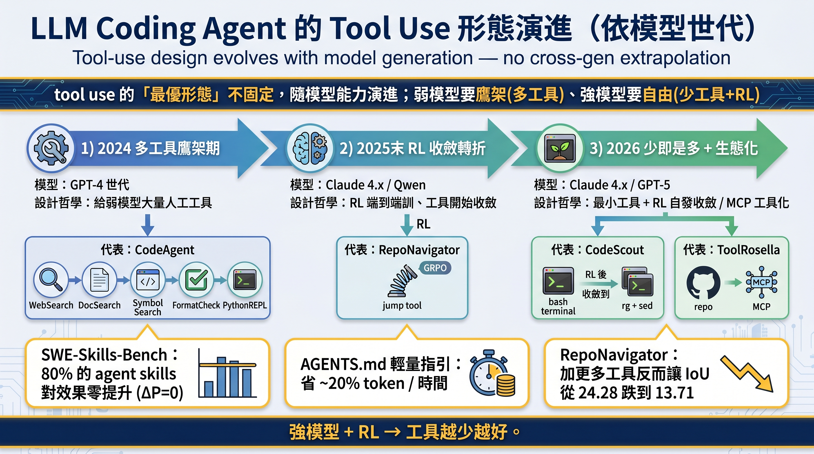
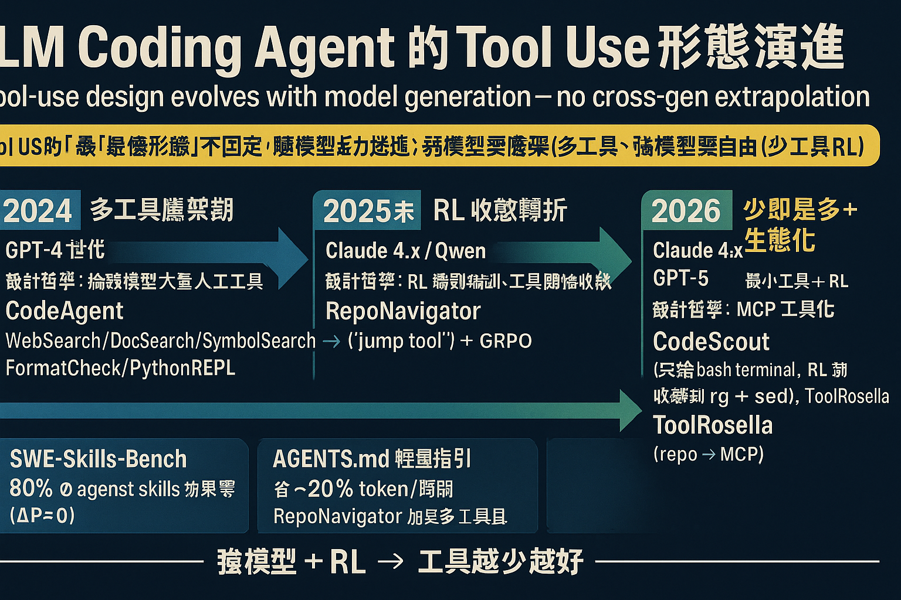

資訊密集、8類齊全帶圖示、中文正確、數字全對

OpenAI：標題裁切、Program Repair 重複出現、用「票」非「篇」、部分字 garbled

Gemini 密但公認核心 gc 捏造(MAGIS畫850實為158)；OpenAI 省數字較安全但稀疏+長尾 garbled

∵ Anchor 是精確數據，生成式會捏造 → 採用下方真實散點圖（核對無誤）


四區塊完整、餅圖/資料量數字全對(1.6K/4K/60K/2M)

OpenAI：Repo.vgor、Clean-PR 重複、Test pars 等 garbled

時間軸三期完整、數據 callout 全對(80%/~20%/24.28→13.71)

OpenAI：標題裁切、中文多處 garbled(「tol US盯」「詨計哲苹」)